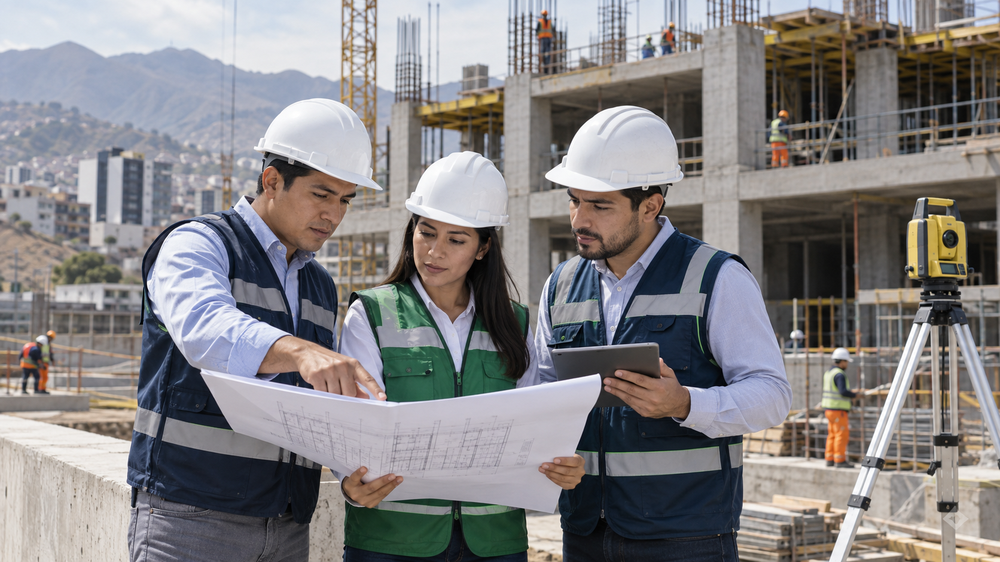
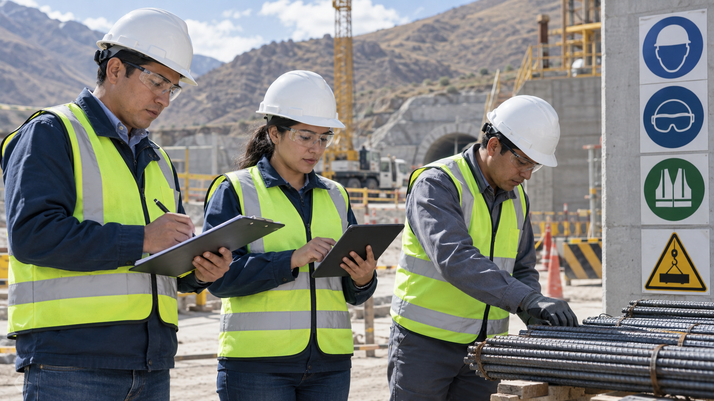

Mision
Convertir ideas en soluciones reales.
Aplicamos experiencia profesional, metodologia BIM y gestion eficiente para desarrollar proyectos con calidad, seguridad y responsabilidad.
Ingenieria | Consultoria | Construccion | Ingenieria Ambiental
Convertimos ideas en soluciones reales para proyectos de ingenieria, construccion e infraestructura responsable.
Quienes somos
LHS NOVA INFRA nace para acompanar proyectos de infraestructura desde la idea hasta la ejecucion, integrando consultoria, construccion, BIM y sostenibilidad en una sola mirada tecnica.

Mision
Aplicamos experiencia profesional, metodologia BIM y gestion eficiente para desarrollar proyectos con calidad, seguridad y responsabilidad.
Vision
Buscamos aportar a infraestructura que transforme positivamente ciudades, comunidades y la vida de las personas.
Enfoque
Planificacion, supervision y comunicacion clara para reducir riesgos desde las primeras decisiones del proyecto.
Ingenieria en movimiento
Las grandes decisiones de obra se ganan antes de iniciar campo: con diagnostico, diseno, control y seguimiento. Nuestro enfoque prioriza orden, trazabilidad y comunicacion clara en cada etapa.

Servicios destacados

Planificacion y ejecucion de obras con criterio tecnico, coordinacion y seguimiento de avance.

Modelado, coordinacion y revision digital para anticipar interferencias y optimizar decisiones.

Control de procesos, criterios de seguridad y verificacion tecnica para proteger cada etapa.

Soluciones responsables con enfoque sostenible, cumplimiento normativo y gestion ambiental.

Soporte para activos e infraestructura con enfoque preventivo, operativo y de continuidad.

Capacidad tecnica para sectores exigentes donde el control y la seguridad son determinantes.
Nuestras principales areas
Consultoria, diseno, supervision, gestion de proyectos y acompanamiento tecnico para reducir incertidumbre.
Modelado BIM, revision digital, compatibilizacion y soporte visual para equipos tecnicos y clientes.
Mineria, hidrocarburos, construccion electromecanica, mantenimiento de activos e infraestructura critica.
Ingenieria ambiental, sostenibilidad, seguridad, calidad y cumplimiento tecnico-normativo.
Nuestros proyectos
Una vitrina visual preparada para mostrar obras, avances en campo, entregables y casos destacados. En esta primera version se usan imagenes referenciales mientras se incorporan registros reales de la empresa.
Solicitar propuesta Infraestructura
Supervision
Consultoria
Infraestructura
Supervision
Consultoria
Equipo y confianza
La confianza no se construye con promesas, sino con seguimiento, reportes claros y decisiones tecnicas bien sustentadas.
Contacto
Comparte una idea general del proyecto y organizaremos una primera conversacion tecnica para entender alcance, prioridades y siguientes pasos.